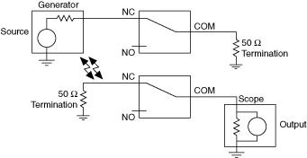
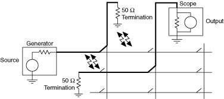

串扰是来自一个活动通道的信号量出现在另一个活动通道上。根据以下公式之一，串扰以传输的 dB 为单位指定：
串扰 (dB) = 10 log (P out / P source )
串扰 (dB) = 20 log (V out / V source )
下图说明了串扰。假定所有通道都已适当终止。


提交有关此主题的反馈。 访问ni.com/support以获得技术支持。
 提交有关此主题的反馈。
提交有关此主题的反馈。 访问ni.com/support以获得技术支持。 提交有关此主题的反馈。 访问ni.com/support以获得技术支持。
访问ni.com/support以获得技术支持。 提交有关此主题的反馈。 访问ni.com/support以获得技术支持。